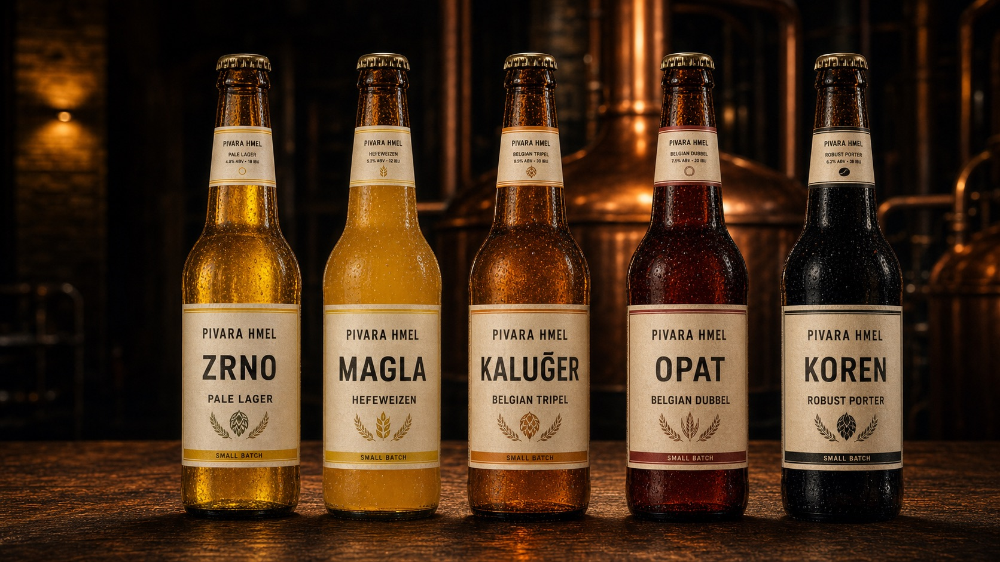

Four essentials.
Endless character.
Water, malt, hops and yeast. Every ingredient has a part to play.
02 / The people behind the bottle
Our story starts with a simple question: what if every ingredient, every hour, and every bottle really mattered?

FIVE CHARACTERS. ONE BREWERY.ХМЕЛ / What we believe
Hmel is an independent brewing concept from Skopje. Our collection begins with Zrno, a clean and crisp lager, and ends with Koren, a deep, roasted porter. There is a whole world of flavor in between.
Every recipe is open. We share the malt, hops, and yeast, along with the numbers behind the flavor. Because good beer has nothing to hide.
Water, malt, hops and yeast. Every ingredient has a part to play.
Cold lagering or warm Belgian fermentation. Every style gets its own time.
From original gravity to serving temperature. All the numbers are here.
03 / Our people
Head brewer
The recipes, the balance, and all the little details that make the beer ours.
Brewery & process
Temperatures, fermentation, and patience. Every kettle is in good hands.
Tastings & hospitality
Your guide to the five bottles — and the stories that come with them.
ХМЕЛ / Better together